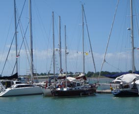
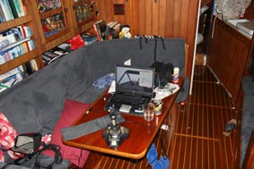
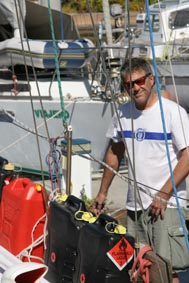
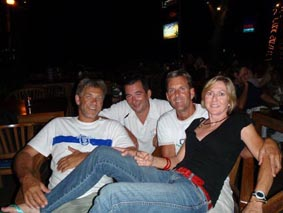
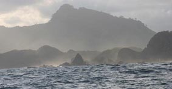
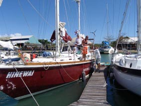
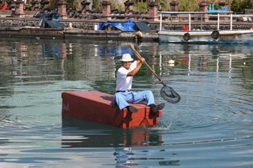

|
|
|
|
|
From Darwin to Bali
14th June 2008 Bali 08 44.4S 115 12.8E 
Yes – you read right. Bali. Not Darwin. Bali! BALI! A land of tropical dreams, beautiful people, memories of Bob and Bing, and of long cold glasses of Bintang.
And the land where Hinewai now sits smugly in her berth at the Bali Marina in Benoa, preening herself, telling all the other yachts about her very nice trip over from Darwin – and probably complaining a little that we’ve broken her again (but more of that later).
Our last email in March found Hinewai and Peter still sitting in Tipperary Marina in Darwin, with Jean back in Perth with her family. Very sadly, Jean’s Mum, Doreen, passed away on the 8th April after a courageous battle with cancer. We all miss her so much. Sometimes, it’s strange how things work out – if Peter hadn’t had his accident, it may have been more difficult logistically for Jean to have been able to spend quality time with her Mum, and be there for her Dad, over the last few months.
It was a very emotional time in more ways than one. We celebrated the 90th Birthday of Jean’s Dad, Arthur, with Jean very cunningly organizing a surprise party for Easter Monday, inviting as many of his and Doreen’s friends as possible. Whilst it was Arthur’s party, it was also very much a special occasion to honour Doreen, to gather around her special friends and family, as we knew the months ahead were going to become increasingly difficult and painful for her. Jean and Dor had been planning a little trip away to be on the coast, watching the waves roll in, something that Doreen always loved to do. Sadly two weeks after the party, Dor slipped away from us. As part of the eulogy that Jean bravely managed to deliver, she concluded with a little poem she wrote that we would like to share with you here:
I will hear your voice in the ocean waves, Feel the warmth of your love in the sun, Your strength will be in the guiding light of the moon And your beautiful smile, in every flowers bloom, The stars will reveal the twinkle your eyes, Ciao for now, Dearest Mum, There are no goodbyes
As we said back in March, we were already starting to makes the plans and prepare for our departure. We’d had a couple of trips to and from Melbourne before Easter (our paths even crossed down there for a couple of days) with Jean sorting a last few things out with the house, catching up with her daughter Natacha, popping down to Tassie for a family wedding and to surprise Mike (of Jasmin) by dropping in on his 70th birthday celebrations. Meanwhile Peter successfully completed his Yachtmaster exams.
Back in Darwin, Peter was transforming Hinewai from a floating home to a travelling yacht again and it was amazing how long it all took.
Topsides, sails had to be pulled out of the lazerette, opened up, checked and in a few cases, taken off for a few minor repairs with the sailmaker. Then the headsail, main and mizzen sails had to be fitted back onto the masts, along with the plethora of odd bits of rope needed to make them work.
Before that, Peter had been up both masts, checking all the rigging, changing a couple of bulbs that had blown, running the hoists for the jacklines. The anchor winch was stripped down, cleaned and greased, as was every slide and block, the decks scrubbed and little outbreaks of rust treated and repainted. Without doubt, the worst job was sanding down all the woodwork and revarnishing – all 10 coats of varnish.
 Down below, it seemed a case of where to start. When we headed off from Melbourne, everything had been logically packed away, but over the months, clutter had grown massively. Things that you don’t need on passage are usually packed away in the worst place for day-to-day use when living for an extended period in a marina. So nothing gets put back where it was – just where it’s convenient.
In the end, Peter gave up trying to match things with our original inventory and pretty much pulled everything out, repacking the big girl with a whole new inventory (to give an idea, the inventory has nearly 2,000 items on it, ranging from where all the tools are, where all the spare parts are, where the meds are, where the food is, where dive gear is, where warm clothes are.
At the same time, all the floors were lifted and the steel checked and repainted as needed, varnish work was touched up, all the charts were re-catalogued and stored away under short, medium and long term need (heaps were also sent back to Melbourne – either as already used or no longer required since we would be missing out a fair chunk of Indonesia now).
A few happy very days were spent going over the engine, effectively doing a full service and just cleaning it – it was amazing how much dust and dirt had settled into the engine compartment over the last few months.
And, of course, there were all the repairs and replacements needed. For a while it was like the good old days in Melbourne, bringing a smile to the faces of the local chandlers and shareholders of Bunnings (a big Aussie DIY chain) as Peter bought this and that to do that job or fix that thing.
It was also scary how much damage the tropical sun had done – for example, the bag the inflatable dinghy lives in was stored on deck under an awning, but for maybe a couple of hours a day, the sun fell on it – and all the straps disintegrated. The soft plastic dorades (the scoop things that let air into the boat) all became brittle and had to be replaced (how anyone can justify charging $70 per dorade when the new one will probably only last a year again!!!!).
Jean was delighted Peter finally got round to fixing the leak in the small window on the starboard side of our cabin over the hanging locker (wardrobe to less nautical types). Peter was less delighted when the Perspex of the old window broke as he took it out, but he found someone who could cut Perspex to the shape of the template he had to make. He was even less than delighted when he discovered they had cut it 1mm larger all round and he had to very carefully resize it.
All in all, it took a good six weeks to get the Big Girl ready and to be honest, it could never have all been done without the help of a great friend up in Darwin. Julie was the wonderful lady who let us use her flat when Peter was seriously laid up with his ribs, and we were delighted when she accepted our invitation to join us in taking Hinewai up to Bali. What we didn’t expect was how Julie would then roll up her sleeves and come and help Peter get the boat ready – and it wasn’t just having another pair of hands to help, it was the good company she brought while we worked on the boat together. A special friend indeed.
 Finally, the departure date was set – around 3rd June. Jean flew in from Perth for 5 days to oversee provisioning the boat, packing and repacking and making room for the crew to be able to stash their belongings. She then made a flying visit to Melbourne to see Natacha, friends and of course the usual suspects of bank managers, real estate agents etc etc. The way things worked out, it meant Jean would not be sailing with us to Bali, There were still a number of things that needed her time in Perth, most importantly, some quality time with her Dad and brothers, but we were fortunate enough that two friends from Melbourne, Andy and Danny, could join Peter. With Julie, that made a team of four to sailing Hinewai the 900 odd nm to Bali.
Peter had hoped that work on the yacht would draw down as he moved into the paperwork side. No such luck, but you still need paperwork to move from one country to another.
To sail into Indonesia, you need a CAIT – a sort of visa for the boat – and you can either try and raise a CAIT yourself or use and Agent in Indonesia. We chose to use an Agent and contacted Bali Marina to organize it. As usual, Peter had left things to the last minute and was a tad worried when told the CAIT took 6 weeks to process when planning to leave in under 4. A couple of emails shot between him and Made of Bali Marina and Made came up trumps with the CAIT coming through in 3 weeks (Bali Marina has a bit of an iffy reputation with some yachties, but I must admit, we have been well pleased with all their help).
Then there’s the insurance to sort out (and we are so lucky to have so much help from Michael Wilson (er, “Stumpy” for those at RBYC asking who he is)) and our personal visas – but slowly everything fell into place.
If anything, the last few days were even more frenetic, but, at last, with all our good-byes said to the many great people we’d met over the last 10 months, around 4pm on 4th June, we motored into the lock to leave Tipperary. The poor crew must have been wondering what they had got into – Peter made a total hash of getting out the pen, and bumped the entrance to the lock – Peter claims he was a little out of practice.
We carefully and slowly motored down the fairly narrow and twisty channel and when we reached the harbour, opened up the engine, planning to give it a bit of a run to take us round to Fannie Bay for the evening……… but it was not to be.
Peter slumped over the wheel, head in hand, thinking “Oh Oh! The engine won’t rev over 2200 and there’s lots of black smoke. It’s that bloody turbo again!”
The turbo attached to the engine is great – giving us almost 30 more hp than the normally aspirated version, but it is so temperamental – especially when not used for a bit. Even though we had been running the engine for a while every few weeks, it is impossible to really bring it up to power with some load on it in a marina. Basically, the turbine just glugs up with soot – and worse, rust from the moisture in the air. The last time this happened in Melbourne, we had to strip the unit down and sand blast it – a week long job.
Just when everything seemed black, our luck changed. Peter grabbed his phone and called Tom to confirm his diagnosis. Now Tom is an ex-Melbourne lad who used to work for the company that fitted the engine, and he’s now working up in Darwin. “Pick me up at Fisherman's Wharf and I’ll have a look”, says Tom so we nose in and he leaps aboard, quickly confirming Peter’s fears. We call up Tipperary and sadly limp back in through the lock to our old pen. Old friends coming past all ask if we are OK. Peter mutters.
But then Tom, the star, strips down to his undies and starts pulling the turbo apart to see if he can fix it there and then. For the next four hours, he crouched in a tiny space, next to the hot engine, dripping with sweat as he opened up the turbo unit then very very carefully cleaned all the crap out with a little screwdriver and tiny wire brush. Peter watched to know what to do next time or paced anxiously.
At last, this dirty, exhausted face appears in the companionway “Let’s start her up and see if she works”. As we bought the revs up past 1800, we all heard the welcome whistle of the turbo kicking in. It’s impossible to describe how Peter felt – from the depths of despair with a pretty major problem, it had suddenly been fixed.
We cleaned Tom up and took him down to Dinah Beach where the bar had a fine work out that night.
After a quick visit to Customs at 8 the next morning for final clearance, at 0915 we again headed out of the lock, down the twisty channel and opened up the engine to our cruising revs– 2800 rpm – with the turbo whistling away happily.
With a quick stop at Cullen Bay to top up the fuel tanks, we motored round to Fannie Bay and dropped the hook just a few feet from where Jean and Peter had anchored when we first arrived in Darwin almost 11 months ago. After a couple of hours just checking all the final last bits and that the navigation was all OK, we finally lifted the anchor at 15.15 and steered 280M.
At last, we were on our way again.
 We soon had the sails up and that first night was idyllic as Danny and Peter ran one watch, Julie and Andy the other. Mid-morning though, the weather changed and for the next 36 hours, we had strong SE winds and big seas – and worse, grey, grey skies. This is not what sailing in the tropics is meant to be and the bugger is, it’s hard to forecast the weather up here. While we download weather faxes each night, the isobars are so far apart at this time of year, they really don’t show anything, and the HF weather forecast from VMW can only say “chance of localized storms” at best.
We were being regularly flown over by Customs and Maritime Security who’d call us up to check who we were (indeed, we didn’t even have a chance to set-up the sweepstake on when we would see the first plane before they found us) so one time I asked they had a more up to date forecast. They asked us to wait and finally came back, sounding a little sheepish, saying they didn’t have the latest forecast, but could tell us what the local conditions were. That was a lot of bloody help, we could see first hand what the local conditions were like.
Eventually the winds dropped and the sky went blue again and for the next four days, we eat up the miles, mainly sailing with just the headsail and mizzen up (downwind, the main does little but blanket the headsail) and playing with the pole and asymmetric kite.
Eventually, the winds dropped right out so we resorted to motoring. And that lead to our next challenge.
About 3am, Peter was down below trying to sleep and heard a bang. We then noticed a strong vibration running through the boat which was quickly identified as coming from the prop shaft. There was something wrong with the propeller so the engine was stopped, but we thought we knew what it was.
Fishermen are lovely people, but they do have a bad habit of dropping nets or pots in odd places, leaving them marked by a tiny buoy. Hard to see in daylight, almost impossible to see at night. We had seen a couple over the last few days, but being few and far between, we did not consider them too great a risk. Maybe we had been wrong – maybe we had motored over one and wrapped the rope around the prop – the bang might have been the buoy itself hitting the boat before the prop cut it free.
We tried the usual methods to clear a folded prop, running in reverse hoping it would unwrap the rope, but to no joy. There was nothing else we could do – even in daylight, it was impossible for anyone to go over the side to look or try and cut the prop free – the swell and waves would be moving the hull around too much for it to be safe (imagine 18 tons landing on you underwater).
What we needed was a nice quiet little bay, but the nearest bays meant a big diversion at that point – we decided we would carry on until we reached Lombok, 300 miles away, where we had identified a perfect spot that was not far off our route.
Three days later, we slowly sailed into Teluk Blongas, past
a rock pinnacle to starboard and some nasty looking rocks to
port – all with boiling foam as the w 
Danny dives so he volunteered to go over the side and recce the prop. Peter was also ready to go in and help with the cutting (very nervously since he’s not the best swimmer). Danny’s head broke the surface “It’s not rope! You’ve lost a blade from the propeller!”
Even before he finished speaking, Peter hit the water and dived down (well, splashed a lot and sort of sunk). Sure enough, there was the prop with two blades in the open position – of the third there was no sign. The bang must have been the prop hitting the hull as it flew off, indeed, there is some paint damage close by.
A quick call back to Melbourne on the Sat Phone confirmed that we could get a new blade made, but there was nothing much else we could do. We were in no rush to leave – the final leg to Bali planned out to be about 12 hours and with no point in arriving in the middle of the night, we spent a very pleasant afternoon just lounging around, doing a bit of swimming and chatting with the local kids who had come out in these leaky old dug-outs to try and sell us coconuts.
About 5, we up anchored and sailed out, putting more tacks in up the narrow channel than we had for the rest of the trip. Danny and Julie prepared the last dinner aboard and we heaved to about 5 miles offshore to eat, little knowing how awful the next 12 hours were to be.
We had to cross the Lombok Channel, renowned for its very fast current, so Peter had taken the plot to cross a few miles south, expecting that the current would dissipate once the channel opened up. He was wrong – it was still very strong and we were driven well south – indeed, for a few hours the yacht was facing almost due north as we slowly crabbed our way across the current while the GPS showed us going south at 2 knots.
Overlaying all of this was another one of those localized storms. Danny and Peter were on watch, and fortunately, being in no rush, we only had a ½ furled heady up with the mizzen - in the space of 5 minutes, the wind blowing from behind us went from 10 knots to gusting over 30, and some big seas come from nowhere as well. With no engine, there was no way we could get head to wind to reef the mizzen, so we had a pretty white knuckle ride for a few hours. For the first time, Hinewai got pooped (a wave breaking over the stern) and Peter was relieved to see how well the cockpit drains do let the water out. We got the off watch up into the cockpit in case we needed more hands and were getting ready to start streaming warps behind us to slow us down when the wind finally abated a bit.
Julie, Danny and Peter took the opportunity to grab some sleep while Andy did a sterling job of keeping us crossing the current without loosing too much to the south. Finally, we got past the main current and started to make headway north again, working our way up into the shadow of the island of Penida. Now we were hoping the wind would stay in – if it dropped out, we would be heading backwards again.
As dawn broke, we were delighted to see Penida close by and we headed west along it’ southern shore. We still had one small arm of the Lombok Channel to cross so positioned ourselves north of our destination, Benoa, before starting the crossing – then even if we were swept down a bit, hopefully we wouldn’t end up too far south.
Half way across, the wind dropped out totally – we were becalmed and the GPS track immediately showed we were no longer heading west, but south again. Normally, we’d just start the engine and power across, but of course, we couldn’t so we just sat there, whistling for the wind.
And it worked – after a couple of hours, the wind came back in and we managed to claw our way back up to the entrance of Benoa Harbour.
Jean, meanwhile, had flown in the day before and had gone down to the Marina to explain we may have some problems getting in. That morning she was down there waiting for us and when we got in range, called us up on the VHF to discuss which pen we could get into.
If the reaction of the locals is anything to go by, we must be one of the few yachts to have ever sailed up the narrow Benoa Harbour – we even spotted a local fisherman taking our photo. It must have looked impressive with all sails up to start with, but while Julie spotted the channel marks for Peter, Andy and Danny worked the dropping of the sails. The main went pretty early on, then as we got closer, the mizzen, leaving us sailing just on the heady. 100 yards or so from the marina entrance, down went the heady and we almost made it in on momentum alone, but did in the end need to very slowly run the engine for a couple of minutes.
We had arrived! Our first new country with Hinewai.
 The formalities were pleasantly straightforward. We had a quick succession of Indonesian official pass through, we offered them a drink, they accepted an unopened bottle of beer, Peter filled in heaps of forms, and Customs didn’t even bother to turn up.
Of course, we should have know better than make any plans – the idea had been that Julie and Danny would spend another week or so with us as we cruised around Bali, but the prop has put the kybosh on that. They have moved off to a hotel in Legian and will be heading back to Oz soon. Jean, not being sure when Peter would arrive, had booked a room in Sanur until the 15th so Peter had the luxury of two air-conditioned nights on shore.
With the weekend over and now back on board, we’re trying to get the prop sorted out. There are no haul-out facilities here – at best, we could go onto a mud bank and be propped up with bamboo poles as the tide goes out. Er, maybe not. So we’ve found a local diver who’s due to turn up today to remove the damaged propeller – then we have to send the two remaining blades back to Oz so the replacement blade can be balanced with them.
Since the rebuild and installation of the folding prop is fairly complex (with lots of small grub screws), we’ve decided to fit our old fixed prop back on until we haul the boat out in Malaysia latter in the year. It’ll cost us a knot or two in speed, but better that than loose another blade. The good news is that we brought the old prop with us, the bad news is that we cannot find the big nuts to hold it on – so Peter’s going nut-hunting later today. 
With luck, we’ll have the old prop attached and working by the end of the week, so hope to head off fro some cruising, popping back to Benoa to pick up the blades when they get there – we dread to think of what all this is going to cost.
So that’s that for the moment. Here safely, albeit a little rough around the edges. Who knows what the next missive may bring…… Next Log Page: On to Lombok and beyond
|
|
|
|
|
|
|
The Crew The Route The Yacht The Log Guestbook Links Contact Us |
|
|
|
|
|
Home |
|
|
All Original Content of this Web Site Copyright © 2000, 2001, 2002, 2003, 2004, 2005, 2006, 2007, 2008, 2009 Ocean Odyssey Pty Ltd |